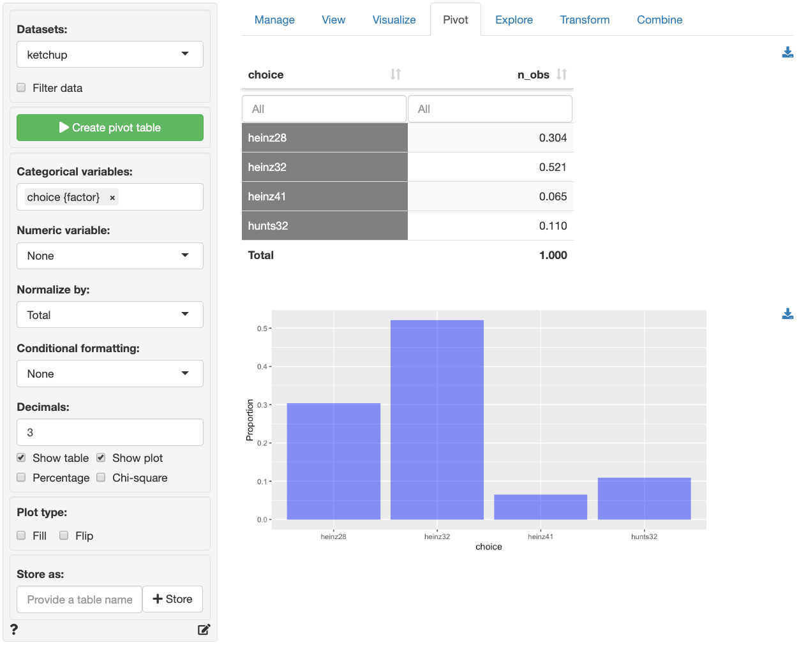
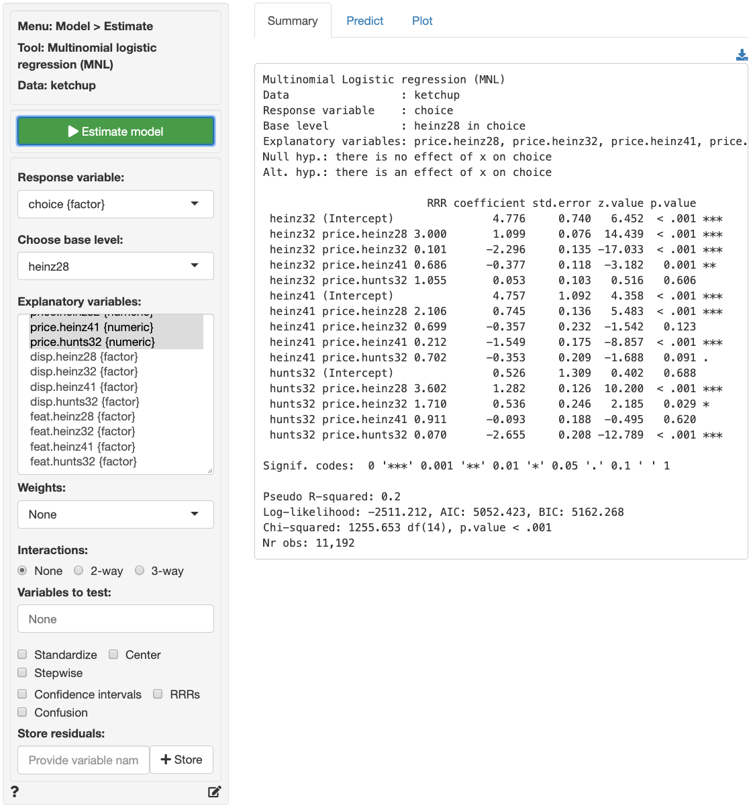
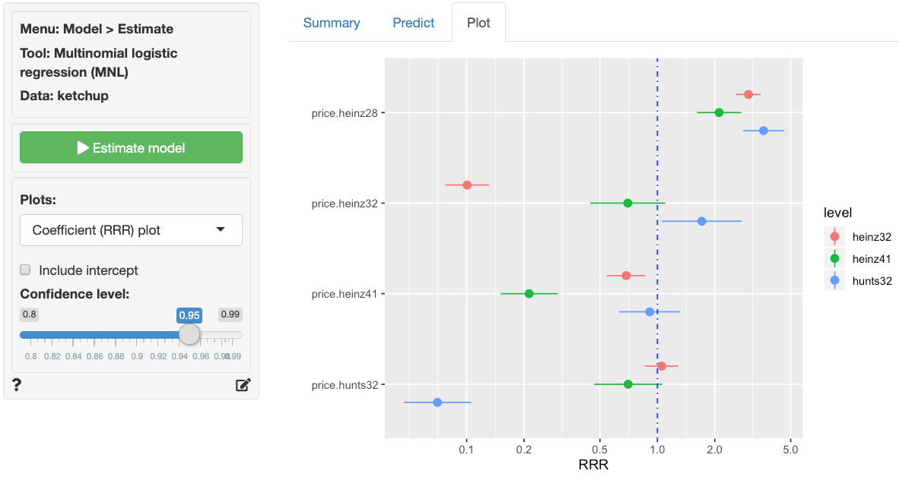
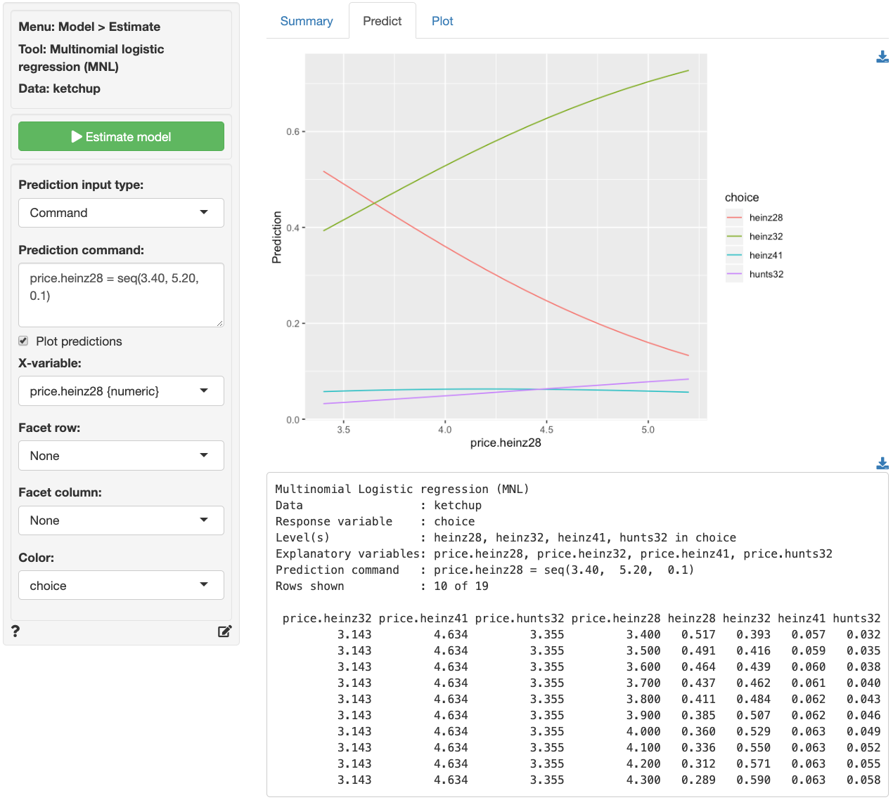

Model > Estimate > Multinomial logistic regression (MNL)
Estimate a Multinomial logistic regression (MNL) for classification
Functionality
To estimate a Multinomial logistic regression (MNL) we require a categorical response variable with two or more levels and one or more explanatory variables. We also need to specify the level of the response variable to be used as the base for comparison. In the example data file, ketchup, we could assign heinz28 as the base level by selecting it from the Choose level dropdown in the Summary tab.
To access the ketchup dataset go to Data > Manage, select examples from the Load data of type dropdown, and press the Load button. Then select the ketchup dataset.
In the Summary tab we can test if two or more variables together improve the fit of a model by selecting them in the Variables to test dropdown. This functionality can be very useful to evaluate the overall influence of a variable of type factor with three or more levels.
Additional output that requires re-estimation:
- Standardize: Relative risk ratios (RRRs) can be hard to compare if the explanatory variables are measured on different scales. By standardizing the explanatory variables before estimation we can see which variables move-the-needle most. Radiant standardizes data for multinomial logistic regression by replacing all explanatory variables \(X\) by \((X - mean(X))/(2 \times sd(X))\). See Gelman 2008 for discussion.
- Center: Replace all explanatory variables X by X - mean(X). This can be useful when trying to interpret interaction effects
- Stepwise: A data-mining approach to select the best fitting model. Use with caution!
Additional output that does not require re-estimation:
- Confidence intervals: Coefficient confidence intervals
- RRRs: Relative Risk Ratios with confidence intervals
- Confusion: A confusion matrix that shows the (lack) of consistency between (1) the actual classes observed in the data and (2) the classes predicted as most likely by the model
Example: Choice of ketchup
As an example we will use a dataset on choice behavior for 300 individuals in a panel of households in Springfield, Missouri (USA). The data captures information on 2,798 purchase occasions over a period of approximately 2 years and includes the follow variables:
- id: Individual identifier
- choice: One of heinz41, heinz32, heinz28, hunts32
- price.x: Price of product x
- disp.x: Is there a display for product x (yes or no)?
- feat.x: Is there a newspaper feature advertisement for product x (yes or no)?
The screenshot of the Data > Pivot tab shown below indicates that heinz32 is the most popular choice option, followed by heinz28. heinz41 and hunts32 are much less common choices amongst the household panel members.

Suppose we want to investigate how prices of the different products influence the choice of ketchup brand and package size. In the Model > Multinomial logistic regression (MNL) > Summary tab select choice as the response variable and heinz28 from the Choose base level dropdown menu. Select price.heinz28 through price.hunts32 as the explanatory variables. In the screenshot below we see that most, but not all, of the coefficients have very small p.values and that the model has some predictive power (p.value for the chi-squared statistic < .001). The left-most output column shows which product a coefficient applies to. For example, the 2nd row of coefficients and statistics captures the effect of changes in price.heinz28 on the choice of heinz32 relative to the base product (i.e., heinz28). If consumers see heinz28 and heinz32 as substitutes, which seems likely, we would expect that an increase in price.heinz28 would lead to an increase in the odds that a consumer chooses heinz32 rather than heinz28.
Unfortunately the coefficients from a multinomial logistic regression model are difficult to interpret directly. The RRR column, however, provides estimates of Relative-Risk-Ratios (or odds) that are easier to work with. The RRR values are the exponentiated coefficients from the regression (i.e., $exp(1.099) = 3.000). We see that the risk (or odds) of buying heinz28 compared to heinz32 is 3 times higher after a $1 increase in price.heinz28, keeping all other variables in the model constant.

For each of the explanatory variables the following null and alternate hypotheses can be formulated:
- H0: The relative risk ratio associated with explanatory variable x is equal to 1
- Ha: The relative risk ratio associated with explanatory variable x is not equal to 1
A selected set of relative risk ratios from the multinomial logistic regression can be interpreted as follows:
RRR coefficient std.error z.value p.value
heinz32 price.heinz32 0.101 -2.296 0.135 -17.033 < .001 ***
hunts32 price.heinz28 3.602 1.282 0.126 10.200 < .001 ***
hunts32 price.hunts32 0.070 -2.655 0.208 -12.789 < .001 ***- The RRR for a $1 increase in
price.heinz32on the relative odds or purchasingheinz32rather thanheinz28is 0.101. If the price forheinz32increased by $1, the odds of purchasingheinz32rather thanheinz28would decrease by a factor of 0.101, or decrease by 89.9%, while holding all other variables in the model constant. - The RRR for a $1 increase in
price.heinz28on the relative odds or purchasinghunts32rather thanheinz28is 3.602. If the price forheinz28increased by $1, the odds of purchasinghunts32rather thanheinz28would increase by a factor of 3.602, or increase by 260.2%, while holding all other variables in the model constant. - The RRR for a $1 increase in
price.hunts32on the relative odds or purchasinghunts32rather thanheinz28is 0.070. If the price forhunts32increased by $1, the odds of purchasinghunts32rather thanheinz28would decrease by a factor of 0.070, or decrease by 93%, while holding all other variables in the model constant.
The other RRRs estimated in the model can be interpreted similarly.
In addition to the numerical output provided in the Summary tab we can also evaluate the link between choice and the prices of each of the four products visually (see Plot tab). In the screenshot below we see a coefficient (or rather an RRR) plot with confidence intervals. We see the following patterns:
- When
price.heinz28increases by $1 the relative purchase odds forheinz32,heinz41, andhunts32increase significantly - When
price.heinz32increases, the odds of purchase forheinz32compared toheinz28decrease significantly. We see the same pattern forheinz41andhunts32when their prices increase hunts32is the only product to see a significant improvement in purchase odds relative toheinz28from an increase inprice.heinz32

Probabilities, are often more convenient for interpretation than coefficients or RRRs from a multinomial logistic regression model. We can use the Predict tab to predict probabilities for each of the different response variable levels given specific values for the selected explanatory variable(s). First, select the type of input for prediction using the Prediction input type dropdown. Choose either an existing dataset for prediction (“Data”) or specify a command (“Command”) to generate the prediction inputs. If you choose to enter a command, you must specify at least one variable and one value in the Prediction command box to get a prediction. If you do not specify a value for each of the variables in the model either the mean value or the most frequently observed level will be used. It is only possible to predict probabilities based on variables used in the model. For example, price.heinz32 must be one of the selected explanatory variables to predict the probability of choosing to buy heinz32 when priced at $3.80.
- To predict the probability of choosing any the four products when a display for
hunts32is available in stores typedisp.hunts32 = "yes"as the command and press enter - To predict choice probabilities when
heinz41is (not) on display and (not) featured typedisp.heinz41 = c("yes", "no"), feat.heinz41 = c("yes", "no")and press enter - To see how choice probabilities change for each of the products as
price.heinz28increases typeprice.heinz28 = seq(3.40, 5.20, 0.1)and press enter. See screenshot below.

The figure above shows that the probability of purchase drops sharply for heinz28 as price.heinz28 increases. heinz32, the most popular option in the data, is predicted to see a large increase in purchase probability following an increase in price.heinz28. Although the predicted increase in purchase probability for hunts32 does not look as impressive in the graph compared to the effect on heinz32, the relative predicted increase is larger (i.e., 3.2% to 8.4% for hunts32 versus 39.3% to 72.8% for heinz32).
For a more comprehensive assessment of the impact of price changes for each of the four products on purchase probabilities we can generate a full table of predictions by selecting Data from the Prediction input type dropdown in the Predict tab and selecting ketchup from the Predict data dropdown. You can also create a dataset for input in Data > Transform using Expand grid or in a spreadsheet and then paste it into Radiant using the Data > Manage tab.
Once the desired predictions have been generated they can be saved to a CSV file by clicking the download icon on the top right of the prediction table. To add predictions to the dataset used for estimation, click the Store button.
Note that MNL models generate as many columns of probabilities as there are levels in the categorical response variable (i.e., four in the ketchup data). If you want to add only the predictions for the first level (i.e., heinz28) to the dataset used for estimation, provide only one name in the Store predictions input. If you want to store predictions for all ketchup products, enter four variable names, separated by a comma.
Note: We ignored endogeneity concerns in the above discussion. Suppose, for example, that
price.heinz28changes due to changes in the quality ofheinz28. Changes in quality effect the price and, likely, also demand for the product. Unless we control in some way for these changes in quality, the estimated effects of price changes are likely to be incorrect (i.e., biased).
Report > Rmd
Add code to Report > Rmd to (re)create the analysis by clicking the icon on the bottom left of your screen or by pressing ALT-enter on your keyboard.
If a plot was created, it can be customized using ggplot2 commands or with gridExtra. See example below and Data > Visualize for details.
R-functions
For an overview of related R-functions used by Radiant to estimate a multinomial logistic regression model see Model > Multinomial logistic regression.
The key functions used in the mnl tool are multinom from the nnet package and linearHypothesis from the car package.